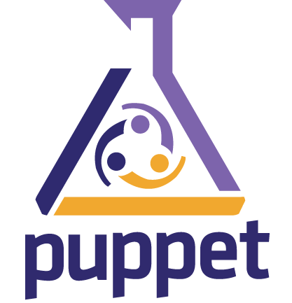
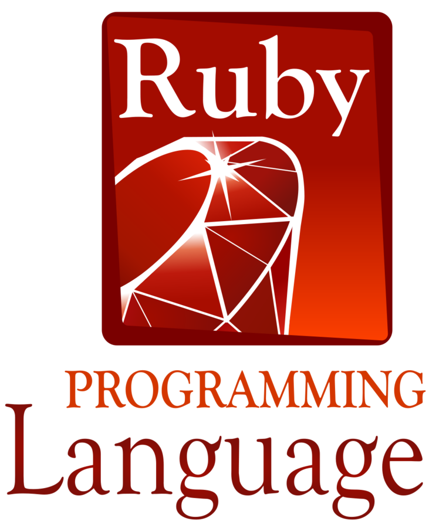
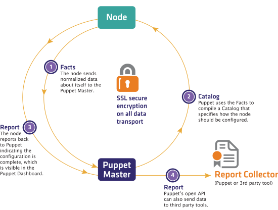

Jenkins by DevOps
with Puppet
by Karol Lassak | @IngwarSwenson
Heya!
Karol Lassak
- Technical Lead/DevOps
- Aktualnie Programista w Allegro
- Programista od 10 lat
- Od początku projekty z administratorami i dla nich
- Duże wdrożenia z DevOps / Puppet  


Jak będzie wyglądał warsztat?
- Krótki wstęp teoretyczny
- Samodzielna praca
- Przerwa koło 13
- Mikro projekt
Co przed nami?
- Co to jest Jenkins i gdzie w tym Puppet?
- Puppet przypomnienie podstaw
- Składnia deklaratywnych manifestów
- Zasoby i zarządzanie kolejnością
- Klasy i definicje
- Moduły Puppet
- Puppet Forge
- Tworzenie modulu Jenkins
Zadanie 1
Przygotować maszyne virtualną do ćwiczeń
- Vagrant
- VirtualBox
- Box
vagrant box add puppetlabs/ubuntu-14.04-64-nocm
Dyskusja
- Jakie cele mam na tym warsztacie?
- Czy potrafię wskazać na czym najbardziej mi zależy?
- Czy mam już plan jak wykorzystać zdobytą tu wiedzę?
Jenkins
Jenkins
- Jedno z najpopularniejszych, darmowych narzedzi continuous integration
- Przy jego pomocy mozna zbudowac łatwo process continuous deployment
- Łatwa instalacja: pakiety do wiekszosci dystrybucji lub java -jar jenkins.war
- Łatwa konfiguracja poprzez web GUI
- Bardzo duża ilość pluginów
Jenkins + Puppet
Dlaczego tak?
- Dostajemy konfiguracje zapisaną w kodzie
- Przy dużej iloci zadań zarzadzanie nimi poprzez GUI jest bardzo czasochłonne
- Znika problem state of art, łatwo można odtworzyć środowisko
- Pozbywamy się również problemu pływającej konfiguracji
Demonstracja Jenkins
Jedno z najbardziej dojrzałych narzędzi DevOps
Proces wprowadzania zmiany
Puppet DSL
package { 'postgresql':
ensure => 'installed',
}
service { 'postgresql':
ensure => 'running',
enable => true,
require => Package['postgresql'],
}Nawet ludzie nie znający Puppeta są w stanie odgadnąć co może oznaczać taki zapis
Zasób Puppet
Zasobem jest każdy pojedynczy deklaratywny element, który puppet może wymusić
service { 'apache2':
ensure => 'running',
enable => true,
}Puppet posiada wiele wbudowanych zasobów
Kolejność
Zasoby tworzą graf w którym określamy kolejność wykonania
service { 'apache2':
ensure => 'running',
require => Package['apache2'],
}
package { 'apache2':
ensure => 'installed',
}require, before, subscribe, notify
Polecany flow
install -> configure ~> service
package { 'openssh-server':
ensure => 'installed',
}
file { '/etc/ssh/sshd_config.conf':
ensure => 'file',
content => template('myssh/sshd_config.conf.erb'),
require => Package['openssh-server'],
}
service { 'ssh':
ensure => 'installed',
subscribe => File['/etc/ssh/sshd_config.conf'],
}Zadanie 1
- Uruchomienie VM przy użyciu Vagranta:
puppetlabs/ubuntu-14.04-64-nocm - Zainstalowanie Puppet goo.gl/a2lGAR:
wget https://apt.puppetlabs.com/puppetlabs-release-trusty.deb sudo dpkg -i puppetlabs-release-trusty.deb sudo apt-get update && sudo apt-get install -y puppet
Zadanie 2
- Napisz prosty manifest instalujący pakiety: git, maven
- Dodający użytkownika
jenkins - Oraz utworzyć katalog użytkownika i SSH
/home/jenkins,/home/jenkins/.ssh - Sprawdz manifest przy użyciu:
puppet parser validate plik.pp - Uruchom przy użyciu Vagrant
Struktura kodu Puppet
Modułowość
Kod puppet umieszczamy w:
- modułach
- klasach
- definicjach
Struktura modułu
mymodule # This outermost directory’s name matches the
│ # name of the module.
├── manifests # Contains all of the manifests in the module.
│ └── init.pp # Contains a class definition. This class’s
│ # name must match the module’s name.
├── metadata.json # Contains META information about module
├── spec # Contains spec tests for any plugins in the
│ # lib directory.
├── templates # Contains templates, which the module’s
│ # manifests can use.
├── files # Contains files to be sourced
├── tests # Contains examples showing how to declare
│ │ # the module's classes and defined types.
│ └── init.pp
└── lib # Contains plugins, like custom facts and
│ # custom resource types.
└── puppet
├── provider
└── typeModuły 101
- Moduły znajdują się na PM
- Moduły zawierają kod Puppet
- Moduły posiadają określony układ
- Moduły mogą być prosto instalowane
Wiecej: http://slides.com/cardil/...
Generowanie modułu
puppet module generate company/modulename
Generuje strukturę modułu
Klasy
- Klasy to nazwane bloki kodu Puppet
- Są definiowane w modułach do późniejszego użycia
- Nie są automatycznie wywoływane, muszą być dołączone do katalogu
- Generalnie opisują średnie i duże fragmenty funkcjonalności
- Nazwa może mylić z innymi językami programowania
Klasy przykład
class apache ($version = 'latest') {
package {'httpd':
ensure => $version, # Using the class parameter from above
before => File['/etc/httpd.conf'],
}
file {'/etc/httpd.conf':
ensure => file,
owner => 'httpd',
content => template('apache/httpd.conf.erb'), # Template from a module
}
service {'httpd':
ensure => running,
enable => true,
subscribe => File['/etc/httpd.conf'],
}
}Użycie klasy
# only once in catalog
# class is a resource
class { 'apache':
version => 'latest',
}
# or simply
include apache
include apacheDefinicje
- To bloki kodu puppet które mogą być wywołane wielokrotnie z różnymi parametrami
- Mogą być użyte jako proste makra dla powtarzających się operacji
Definicje - przykład
# /etc/puppet/modules/apache/manifests/vhost.pp
define apache::vhost ($port, $docroot, $servername = $title, $vhost_name = '*') {
include apache # contains Package['httpd'] and Service['httpd']
include apache::params # contains common config settings
$vhost_dir = $apache::params::vhost_dir
file { "${vhost_dir}/${servername}.conf":
content => template('apache/vhost-default.conf.erb'),
# This template can access all of the parameters and variables from above.
owner => 'www',
group => 'www',
mode => '644',
require => Package['httpd'],
notify => Service['httpd'],
}
}Pliki
w modułach
file { '/home/jenkins/.ssh/id_rsa.pub':
ensure => 'file',
mode => '0400',
# Plik w /etc/puppet/modules/myjenkins/files/id_rsa.pub
source => 'puppet:///modules/myjenkins/id_rsa.pub'
}
W modułach można umieścić pliki w katalogu: files/
Template
w modułach
file { '/etc/default/jenkins':
ensure => 'file',
mode => '0644',
# Plik w /etc/puppet/modules/myjenkins/templates/etc-jenkins.erb
content => template('myjenkins/etc-jenkins.erb')
}
W modułach można umieścić template w katalogu: templates/
Template
przykład
## Jenkins settings file
JENKINS_USER=<% @user %>
Plik: /etc/puppet/modules/myjenkins/templates/etc-jenkins.erb
Zadanie 3
- Wykorzystując kod z zadania 2 utworzyć moduły puppet
inazwisko/myjenkinsorazinazwisko/commoni przenieść kod do klas i definicji - Przygotować smoke testy w
tests - Uruchomić kod przy pomocy Vagrant